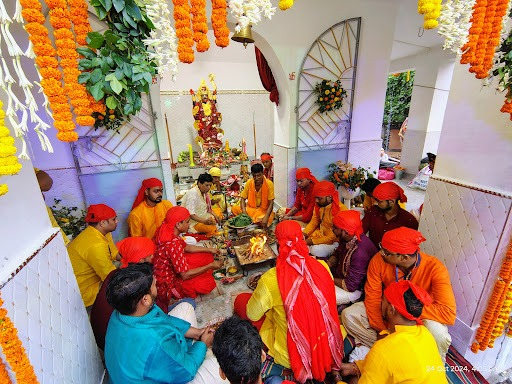
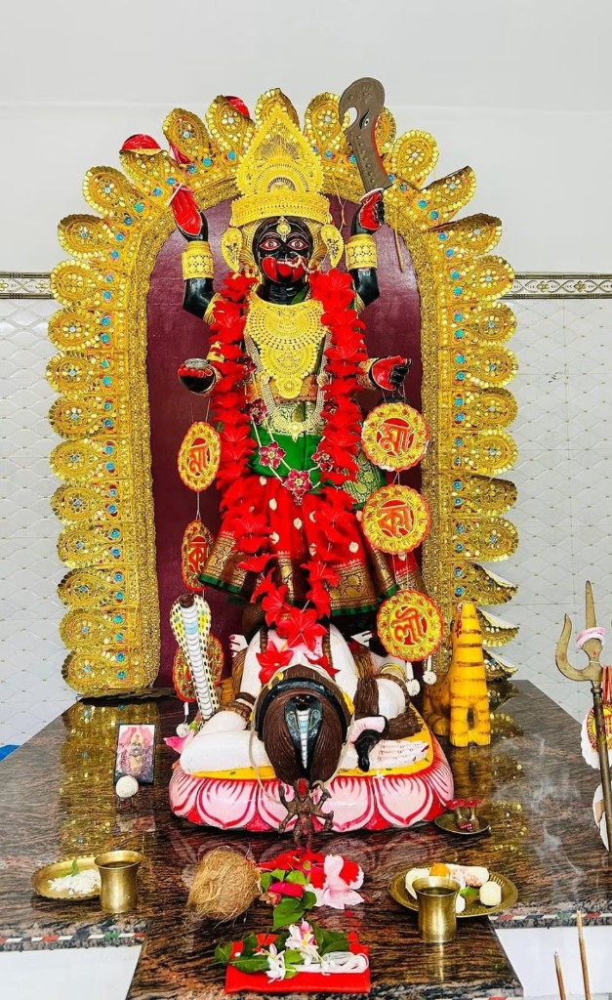

The temple celebrates Mahashivaratri and Kali Puja with utmost devotion, grandeur, and community joy.

Annual CelebrationMahashivaratri is celebrated with devotion, special worship and a spiritual atmosphere at the temple.

Deepawali FestivalKali Puja brings devotees and the local community together in an atmosphere of devotion and celebration.
Stay connected with our official Facebook page for live updates, festival photos, and community announcements.
Facebook পেজ দেখুন ↗